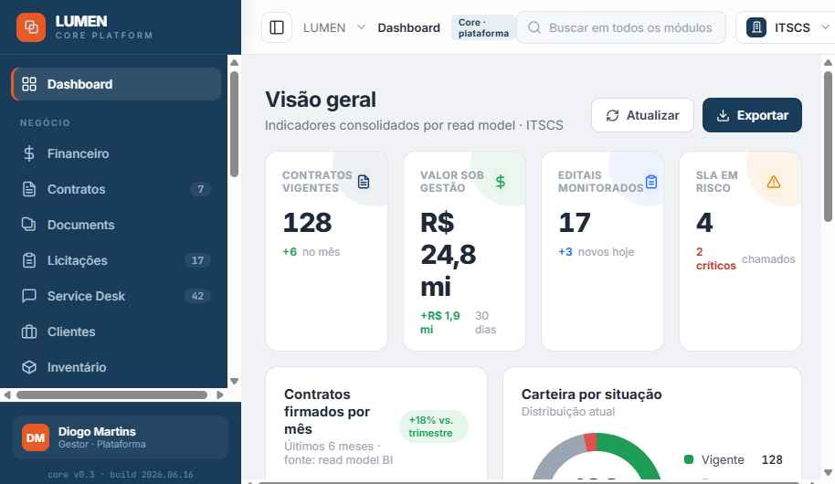
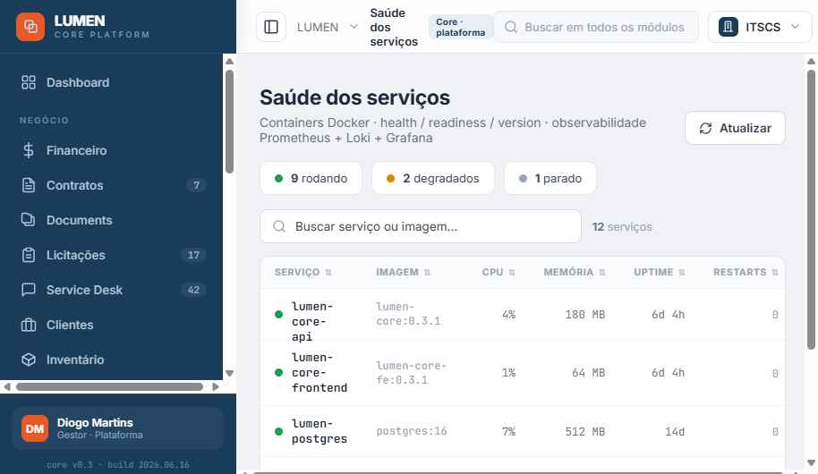

A plataforma que
unifica os sistemas
da ITSCS
Uma base única de login, navegação, permissões e design — onde cada módulo da empresa se encaixa.

Cada sistema reinventava o próprio padrão
Telas, menus, login e permissões divergentes em cada projeto — mais custo de manutenção, entregas mais lentas e segurança fragmentada.
Uma plataforma comum que entrega, de uma vez para todos os módulos, o que todo sistema precisa ter.

Arquitetura modular
Acesso, segurança, multiempresa, navegação, auditoria e biblioteca de componentes.
Cada domínio é um container próprio que exibe sua tela dentro do Core.
NEXUS e HERMES apoiam os módulos por evento — sem fazer parte do Core.
Permissões modulo.recurso.acao revalidadas no servidor · MFA nas ações críticas · isolamento por empresa.
O que o Core já entrega
Menu dinâmico por permissão.
Docker, WhatsApp, e‑mail.
Monitoramento dos módulos.
Login customizável + avisos.
Componentes-padrão prontos.
Módulos do antigo SOGI, agora no Core
Módulos prontos foram reaproveitados e padronizados — sem reescrever cada tela.

Onde estamos e o que vem
A plataforma, a segurança e a biblioteca de componentes.
APIs, RBAC no servidor, MFA e multiempresa reais.
Operação assistida com área‑piloto e ajustes.
Liberação geral para a empresa.
O que a ITSCS ganha
Cada novo sistema parte do Core — o básico já vem pronto.
Um único modelo de acesso para todos os módulos.
Times focam na regra de negócio, não na tela.
O colaborador aprende uma vez e usa tudo.
Uma plataforma. Todos os sistemas.
O LUMEN Core é a fundação do próximo passo tecnológico da ITSCS.